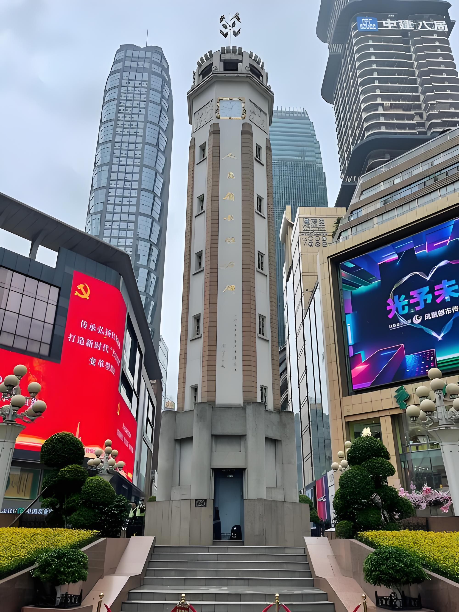
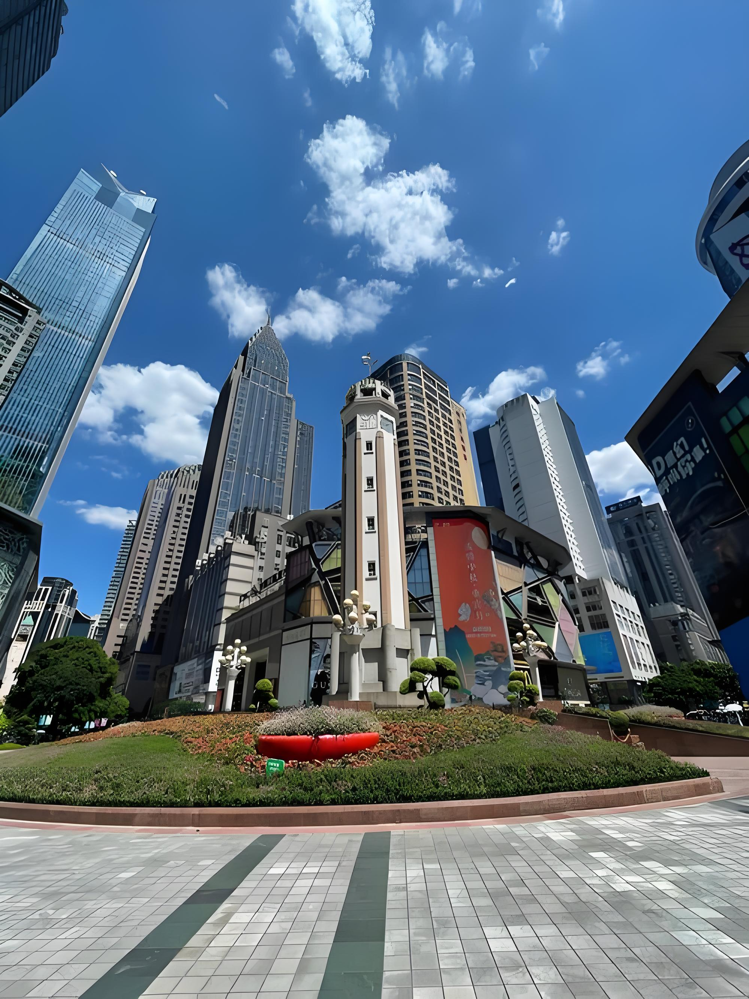
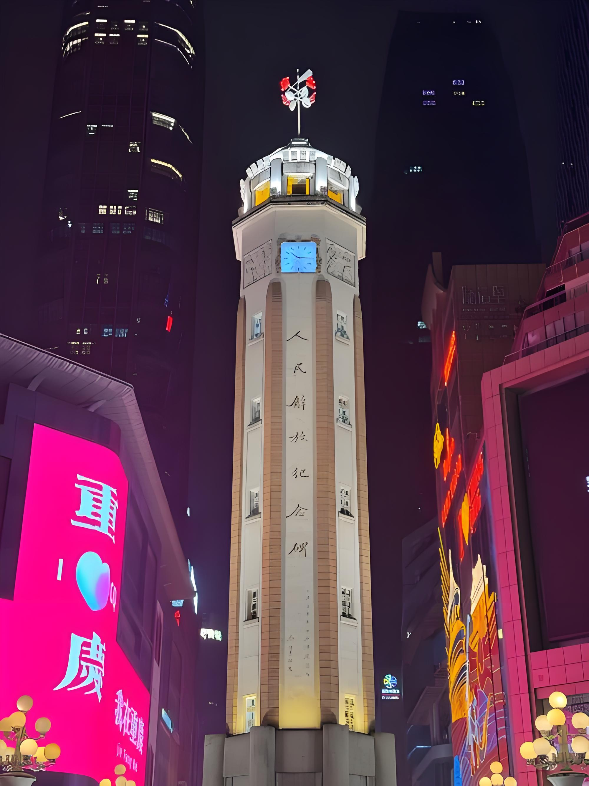

JIEFANGBEI
The heart of Chongqing's commercial district, Jiefangbei has been the city's symbolic center since the 1940s. The People's Liberation Monument, standing 27.5 meters tall in the middle of the square, commemorates the liberation of Chongqing from Nationalist rule in 1949.
Today, the surrounding pedestrian street stretches across 30,000 square meters, lined with international brands, local boutiques, and traditional Chongqing restaurants. At night, the monument glows with colorful lights and the surrounding skyscrapers create a dazzling skyline.
Worthwhile experiences include riding the Hongyadong escalator, one of the longest outdoor escalators in Asia, exploring the historic Baixia Residence nearby, and enjoying evening views of the confluence of the Yangtze and Jialing Rivers.


